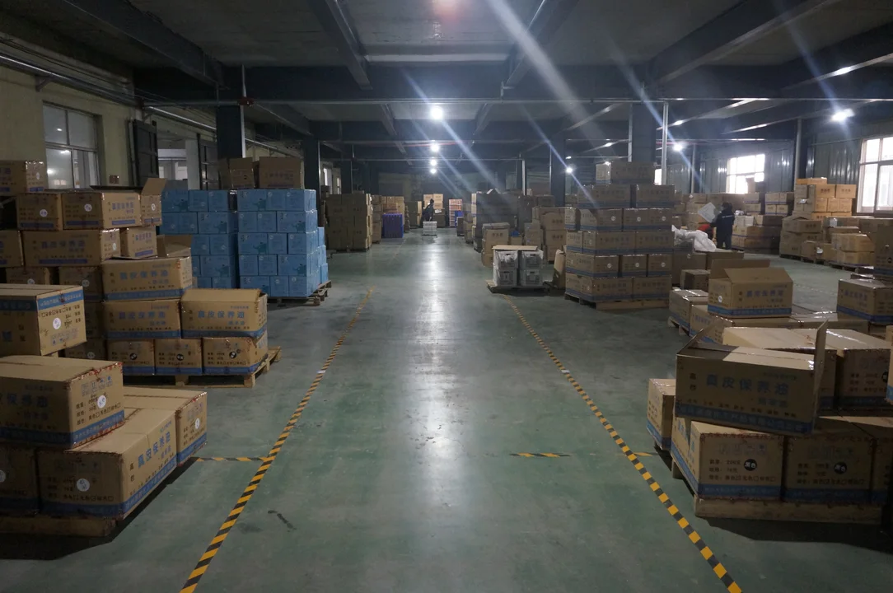
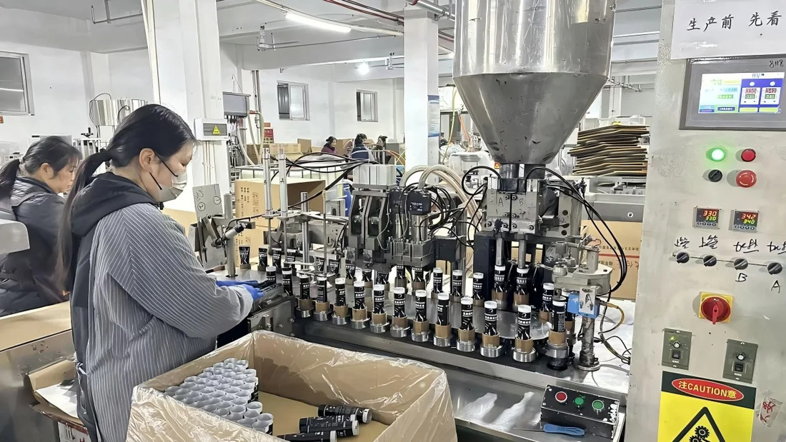
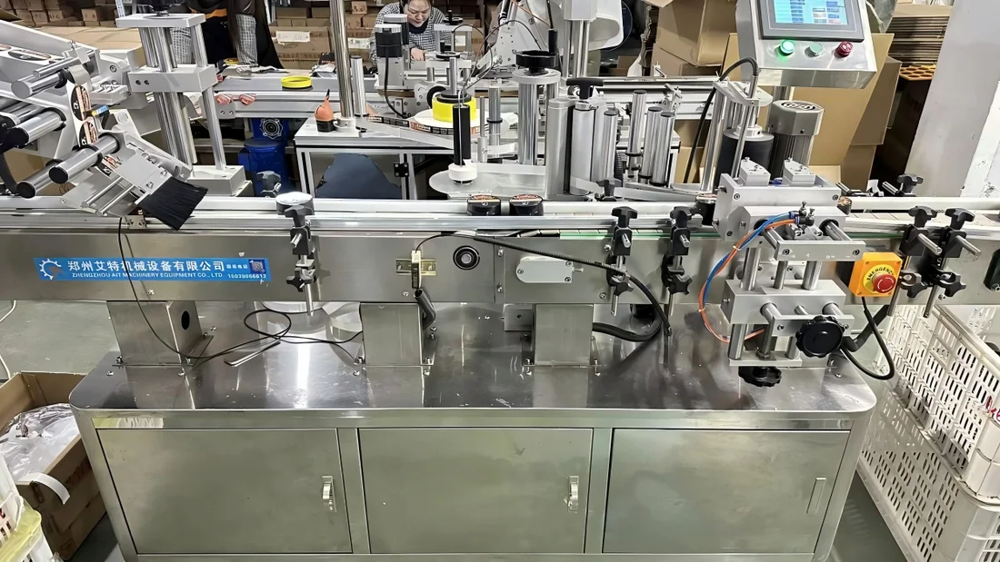
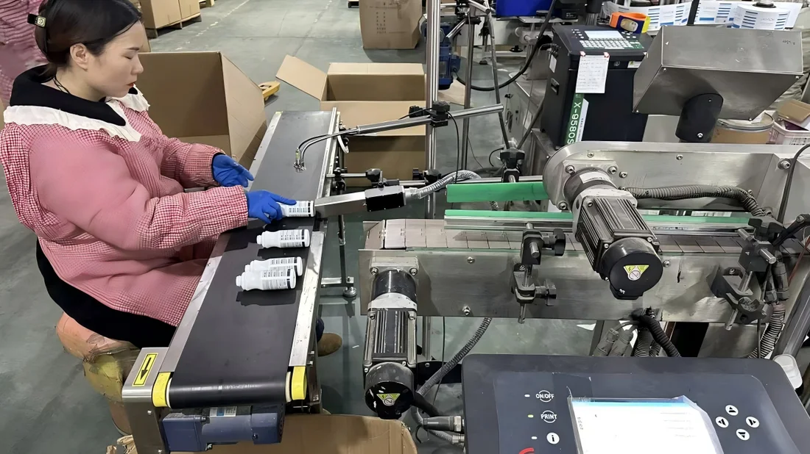
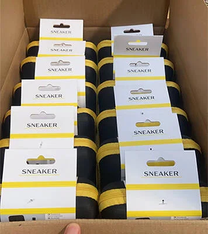
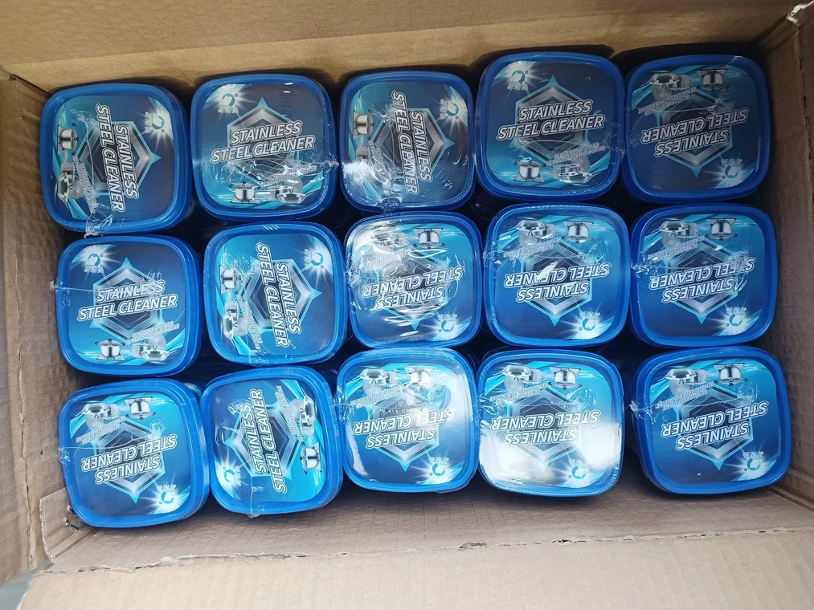
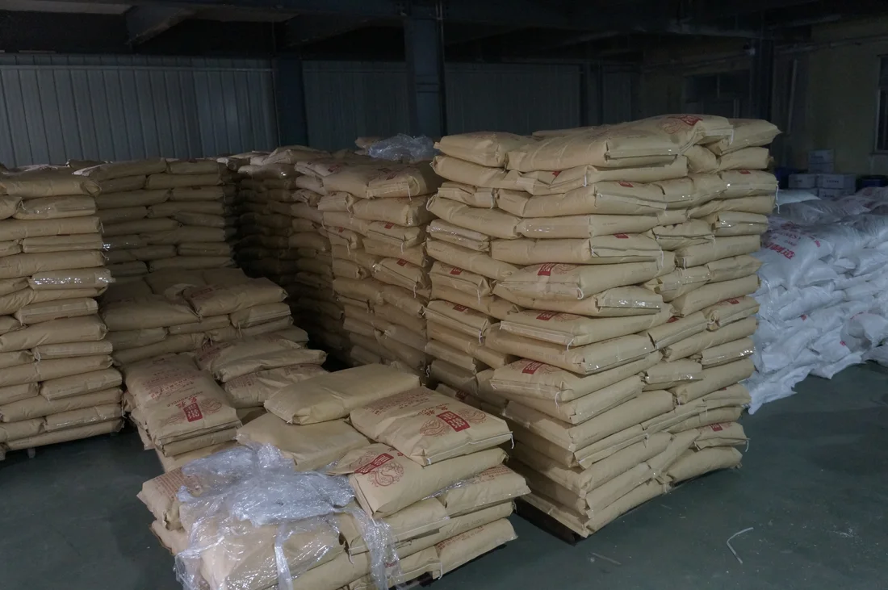
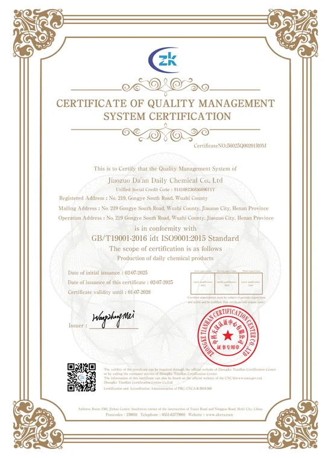
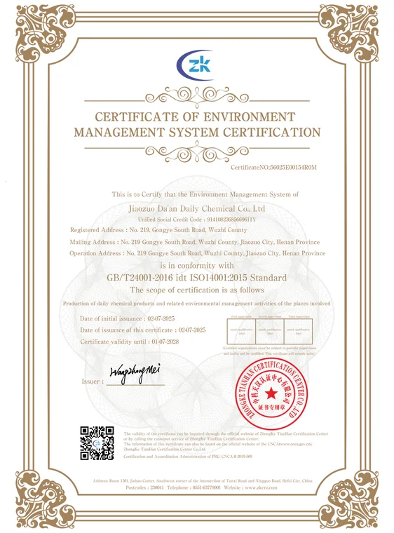
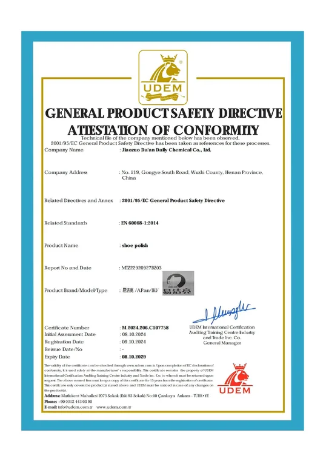

Factory ExteriorFactory site and entrance for buyer verification.
Website:https://www.daanclean.com
Factory direct supply since 2009
OEM/ODM cleaning and care product manufacturer for B2B buyers
Jiaozuo Daan Daily Chemical Co., Ltd. integrates R&D, production, supply and sales, supporting global buyers and brand owners across leather care, sports shoe care, household cleaning, clothing care and car care product lines.
2009Established in Jiaozuo, Henan
13,000 sqmApproximate factory area
200+Employees and production team
OEM/ODMPrivate label and custom packaging

Warehouse StockFinished goods and bulk order preparation area.
Production WorkshopDaily chemical production workshop and equipment layout.
B2B Service TeamOrder coordination and custom project communication.
Customization
Factory service capability
- OEM/ODM private-label customization
- Formula, fragrance, color and product-form customization
- Bottle, jar, tube, spray, wipe and kit packaging options
- Label, carton and multilingual packaging support
- Bulk order production with export documentation support
- SDS/MSDS and compliance files for key product lines
Certificates and compliance
Current trust documents
Production Line
Production Line

Automatic Filling LineFilling equipment for liquid and cream-format cleaning and care products.

Packaging Production LineProduct packing workflow supporting private-label and export orders.

Labeling EquipmentLabeling and coding equipment for customized packaging requirements.

Date CodingBatch and date coding support for order traceability.
Warehouse
Warehouse

Packed GoodsFinished goods packing and shipment preparation for bulk orders.

Export PackingOrder packing supports carton, kit and private-label shipment needs.

Factory SiteFactory environment supporting daily chemical production.
Certificates
Certificates

ISO 9001Quality Management System certificate, valid until 2028-07-01.

ISO 14001Environmental Management System certificate material.

ISO 45001Occupational Health and Safety Management System certificate material.

CE DocumentationCE compliance document available for buyer review.

GPSR EU Responsible PersonEU responsible person certificate available for buyer review.

Spain Packaging Law RegistrationSpain producer registration material for packaging compliance.

Liquid Shoe Polish SDSSDS/MSDS material for liquid shoe polish.

Beeswax SDSSDS material for beeswax / mink oil product line.
No matching products